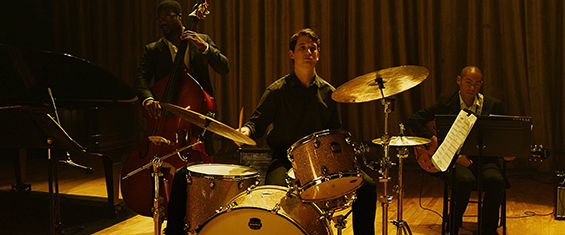
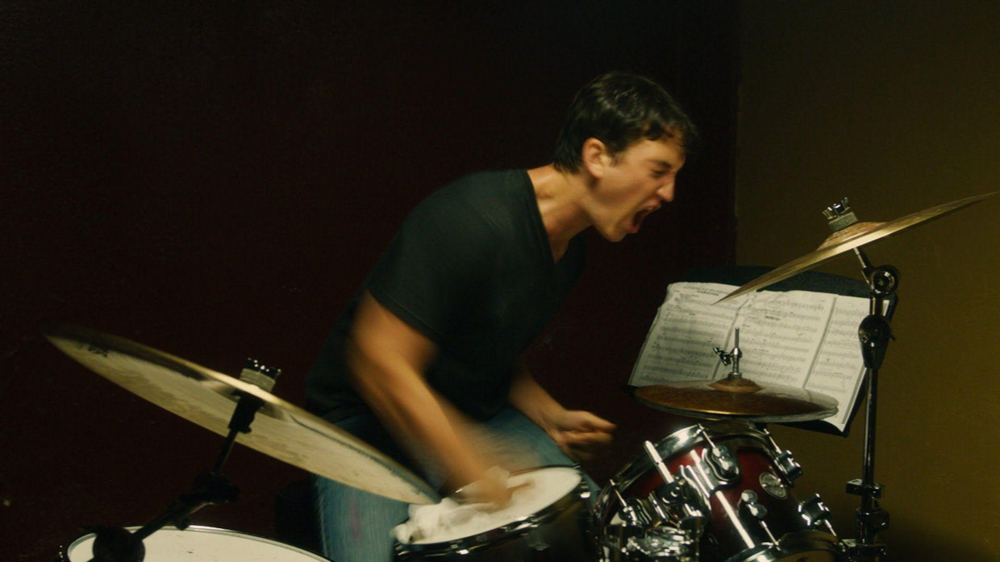

Date de sortie : 2014
Réalisateur : Damien Chazelle
Genre : Drame, Musique, Psychologique
Acteurs principaux : Miles Teller, J.K. Simmons
Note globale : 4.5/5
Un duel viscéral entre maître et élève, où la passion pour la perfection devient une guerre psychologique. Une œuvre haletante et brutale sur le prix du génie.
⚠️ Attention : Cette critique contient des spoilers sur le film Whiplash ⚠️
Résumé du film
Andrew Neiman, jeune batteur de jazz ambitieux, rejoint le prestigieux conservatoire Shaffer à New York. Il rêve de devenir un grand, un véritable prodige. Sa rencontre avec Terence Fletcher, chef d’orchestre aussi brillant que tyrannique, va le plonger dans une spirale d’exigence, de peur et de dépassement. Entre admiration et torture, le lien entre les deux hommes devient une lutte acharnée pour la reconnaissance , et la perfection.
Une tension à couper au couteau
TOUT SIMPLEMENT ABSORBANT. Que ce soit l’acting des deux protagonistes, la musique, le montage ou le rythme : tout ici respire la tension, la sueur, la folie. Whiplash ne se regarde pas, il se subit , au bord du siège, à chaque coup de baguette, à chaque cri de Fletcher.
Le film tient sur cette ligne électrique : va-t-il réussir ? Cette question, Damien Chazelle en fait une drogue narrative. Le spectateur en devient dépendant, jusqu’à l’explosion finale. Cette dernière scène, d’une intensité rare, transforme une trahison en moment de grâce. C’est la fin d’un cycle, d’un duel où Andrew renverse la domination de son mentor pour lui lancer un regard presque vengeur : si je tombe, tu tombes aussi.
Fletcher, le bourreau de sa propre création
L’histoire n’est pas parfaite, et c’est ce qui m’empêche de mettre 5 étoiles. Certains passages, notamment la discussion au bar, laissent une sensation étrange. Fletcher semble avoir tout prévu, tout manipulé, mais son objectif reste trouble : détruire ou révéler ? Pousser au génie ou briser pour mieux façonner ?
Ce flou moral fait aussi la richesse du film. Fletcher est l’incarnation du professeur qui veut créer un chef-d’œuvre, quitte à broyer ses élèves. Andrew, lui, devient à la fois victime et héritier de cette méthode. Le film prend alors la forme d’un miroir : celui de la création artistique, violente, égoïste, mais transcendante.
Le pouvoir de la découverte pure
Ce qui rend Whiplash si marquant, c’est aussi la découverte pure. Aucun spoiler, aucun trailer, rien. J’ai vécu le film dans sa brutalité première, sans anticipation, sans filtre. Et plus j’avance dans le temps, plus je me rends compte à quel point cette approche redonne toute sa force au cinéma. On ne regarde plus, on vit. Chaque plan devient une surprise, chaque note une montée d’adrénaline.
Damien Chazelle, maestro de la tension
Chazelle orchestre son film comme un morceau de jazz : précis, imprévisible, nerveux. Il ne filme pas la musique, il la sculpte. Le montage saccadé, les coups de cymbales, les zooms brutaux , tout concourt à faire battre le cœur du spectateur au même tempo que celui d’Andrew. Et cette montée vers la perfection devient un enfer fascinant.
À travers Whiplash, Chazelle interroge le prix du talent. Jusqu’où peut-on aller pour atteindre la perfection ? À quel moment la passion devient-elle autodestruction ? La réponse se trouve dans le silence final du film, après la dernière note : celle d’un artiste vidé, mais libre.
Conclusion
Whiplash est une œuvre sur l’obsession, sur la souffrance créatrice et sur le besoin maladif de reconnaissance. Ce n’est pas un simple film de musique, c’est un affrontement entre deux visions de la perfection. C’est viscéral, brutal, parfois dérangeant, mais terriblement sincère.
En résumé : un film à la fois cruel et nécessaire, où la quête du sublime passe par la douleur.
➡️ À lire aussi : Sinners, un thriller surnaturel qui captive et surprend